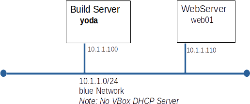

This evaluation must be completed in class
You will submit a report generated by the script, HostInfo02.sh. This script is part of a tar archive for this evaluation.
| web01 built and patched | 1 |
| Bullwinkle's instructions | 3 |
| Configure ssh for alice and rocky | 3 |
| Trojan_c analysis | 3 |
| Total | 10 |
Today you will built a web server, similar to the one you built for Evaluation 1, but it will be more secure.

This is a good opportunity to check if web01 is build more or less correctly. We will install the HandsOnEval02.tar archive in root's home directory on web01.
./HandsOnEval02/alice.pub ./HandsOnEval02/bullwinkle_msg_1.txt ./HandsOnEval02/bullwinkle_msg_2.txt ./HandsOnEval02/bullwinkle_msg_3.txt ./HandsOnEval02/bullwinkle_msg_4.txt ./HandsOnEval02/bullwinkle.pub.txt ./HandsOnEval02/HostInfo02.sh ./HandsOnEval02/rocky.pub ./HandsOnEval02/trojan_c
Your team leader, Rocky, likes to be able to log onto ever server without typing a password. Alice will be managing web01 and should be able to log in without a password as well. Furthermore, since Alice is on vacation, Rocky will need to be able to log in as Alice or himself. All the keys you need can be found in the evaluation tar archive.